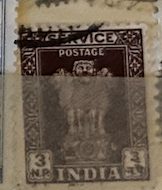
| SOURCE | TITLE| IMAGE MATCH | click to source page |
| www.ebay.com | INDIA 1950 Capital of Asoka Pillar 6P USED (IBX) | eBay | 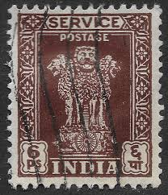 |
| www.ebay.com | India stamps - Capital of Asoka Pillar 8 Indian anna 1950 Sg ... | 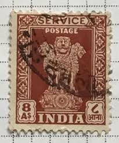 |
| www.mysticstamp.com | O147//50 - 1959-60 India - Mystic Stamp Company | 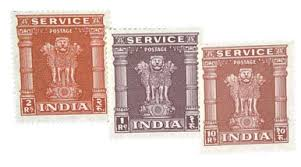 |
| www.mysticstamp.com | O136 - 1957 India - Mystic Stamp Company | 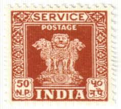 |
| www.ebay.com | INDIA 1950 SERVICE POSTAGE ASHOKA PILLARS 1 RUPEE USED STAMP ... | 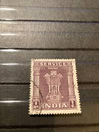 |
| www.alamy.com | Postmarked stamp from India in the Service (1957-58) series ... | 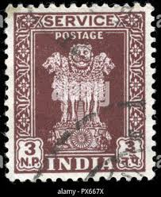 |
| www.hipstamp.com | India Scott O129 - SG O167, 1957 Service Official 3np used ... | 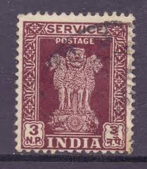 |
| www.ebid.net | India 1958 Service 50np Used Stamp Asoka Pillar . on eBid ... | 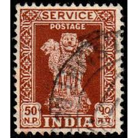 |
| www.youtube.com | India Offical Asoka Pillar Service Postage Stamps - YouTube | 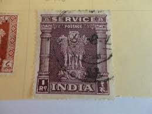 |
| www.facebook.com | India Stamps (1950 & 1957) featuring Lion Capital | 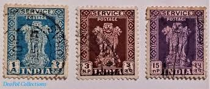 |
| www.alamy.com | ashoka hi-res stock photography and images - Page 13 - Alamy | 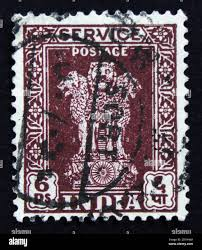 |
| www.lastdodo.com | Asoka pillar 1.00 (1984) - India - LastDodo | 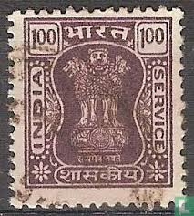 |
| www.allnumis.com | 3 Naya Paise - Service Postage India, Service ( Capital of ... | 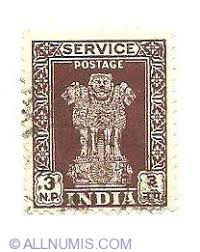 |
| www.ebay.com | India Scott #0122 never hinged | eBay | 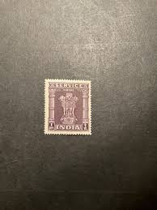 |
| www.stampcollectingblog.com | Indian Capital of Asoka Pillar official postage stamps | 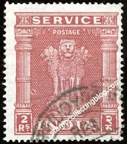 |
| www.shutterstock.com | Ashoka Stamps: Over 169 Royalty-Free Licensable Stock Photos ... | 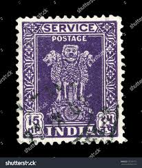 |
| www.worldwide-mint.com | 1958 - 1971 India Ashoka Lion Capital Service Stamp - 5r ... | 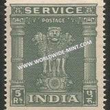 |
| ar.pinterest.com | India Stamp | 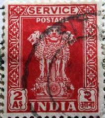 |
| www.hipstamp.com | India - 1958-71 Official Stamps / Service Sg#O186-O189 - 4v ... | 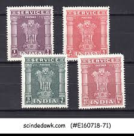 |
| www.bobshop.co.za | India - India - 22 Stamps Mounted (Hinged) on Old Album Page ... | 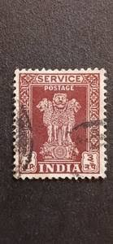 |
| www.bidcurios.com | 1971 India 100P Official Stamp MNH Block Of 4 Stamps - BidCurios | 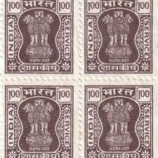 |
| www.ecrater.com | India Postage Stamp 1967 Scott# IN 0153 Used 5 p Capital of ... | 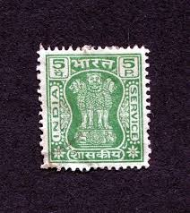 |
| www.ebid.net | India 1958 Service 3np Used Stamp Asoka Pillar .. on eBid ... | 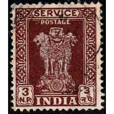 |
| www.philindiastamps.com | India MNH Stamps & Sets| Service| Phil India Stamps | 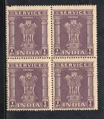 |
| picryl.com | 18 1950 stamps of india Images: PICRYL - Public Domain Media ... | 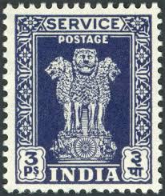 |
| www.istockphoto.com | Old India Postage Stamp Stock Photo - Download Image Now ... | 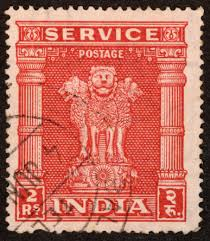 |
| www.alamy.com | A vintage Lion Capital of Ashoka postage stamp from India ... | 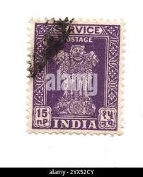 |
| www.bobshop.co.za | India - India Cochin Anchal Indian State Overprints 3 Unused ... | 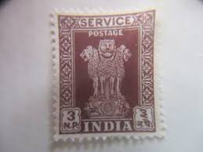 |
| www.facebook.com | What is the history of the Postes Persanes stamp? | 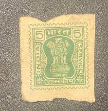 |
| en.todocoleccion.net | 1934 india rey jorge v - Buy Antique stamps of India on ... | 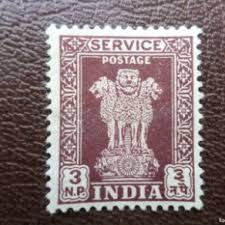 |
| jenikirbyhistory.getarchive.net | 26 Lion capital of ashoka, Stamp Images: PICRYL - Public ... | 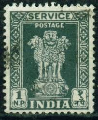 |
| www.ebay.com | India Scott #O139 Block of 4 Used | eBay | 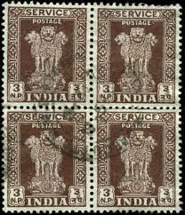 |
| www.collectorbazar.com | SERVICE POSTAGE OFFICIAL USED STAMP 1 Re ( 1 PACKET - 1 STAMP) | 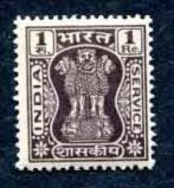 |
| www.stampexindia.com | INDIA 1950 - Official Postage Stamps, 1st Series, Anna Value ... | 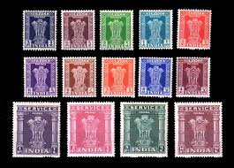 |
| www.instagram.com | From Asia's first postage stamp in 1852 to the world's first ... | 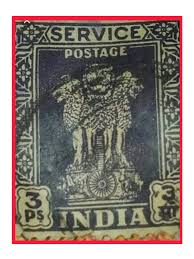 |
| www.ebid.net | India 1958 Service 6np Used Stamp Asoka Pillar on eBid ... | 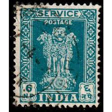 |
| coinbazzar.com | Old Postage Service Stamp of Republic India Large Size, Used ... | 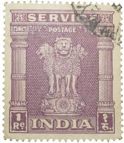 |
| www.delcampe.net | Official Stamps - INDIA, 1950, Service, 8 As, Ashokan ... | 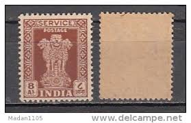 |
| www.mxiqi.com | 印度邮票- 泡泡堂外币- 泡泡堂外币- 麦稀奇 | 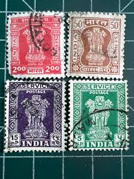 |
| www.redbubble.com | "Vintage Indian Lions Red Postage Stamp" Sticker for Sale by ... | 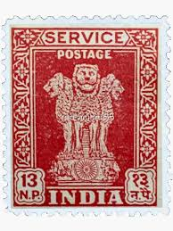 |
| pngtree.com | 31,460+ Little India Temple Photos, Pictures And Background ... | 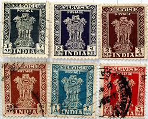 |
| www.worldwide-mint.com | 1950 - 1951 India Ashoka Lion Capital Service Stamp - 1r ... | 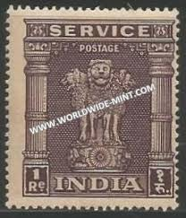 |
| en.todocoleccion.net | sello india 3 n.p. - Buy Antique stamps of India on ... | 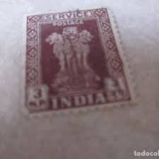 |
| www.dreamstime.com | Postage Stamp India, 1980. Capital of Asoka Pillar Editorial ... | 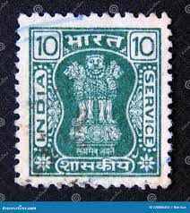 |
| www.shutterstock.com | India Circa 1950 Stamp Printed India Stock Photo 258669272 ... | 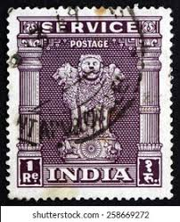 |
| commons.wikimedia.org | File:Stamp of India - 1976 - Colnect 309567 - 1 - Capital of ... | 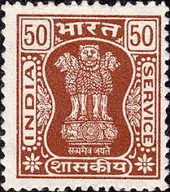 |
| www.alamy.com | India post stamp hi-res stock photography and images - Page ... | 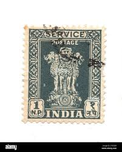 |
| www.bidcurios.com | India Fiscal Service stamp Rs.10 - BidCurios | 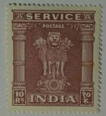 |
| therainkey.com | India Ashoka 6 PS Service Postage Stamp – SL936 – The RainKey | 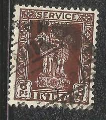 |
| www.mysticstamp.com | O148a-50a - 1969-71 India - Mystic Stamp Company | |
| www.ecrater.com | India Postage Stamp 1967 Scott# IN 0157 Used 20 p Capital ... | |
| www.philindiastamps.com | Service Series 1947- Current| Phil India Stamps | |
| www.istockphoto.com | Indian Vintage Stamp With Sculpture Of Three Lions Stock ... | |
| www.instagram.com | When letters took time, but emotions arrived first ... | |
| www.bobshop.co.za | India - India - 1958-1971 - Capital Of Ashoka Pillar - 12 ... | |
| www.stampexindia.com | INDIA 1959-Official Stamp-1 Re-Block of 4-MNH-Watermark ... | |
| bharatexotics.com | Ser02) India service stamps of 1950-1951. # 14 varieties set ... | |
| www.collectorbazar.com | India Rs 10 Service Official Stamp Block of 4 UMM - B5559 | |
| www.hipstamp.com | India 1950 - U - Scott #O114 | Asia - India, Officials Stamp ... | |
| www.stampsandstuff.net | Stamps from India |
{kind=link}